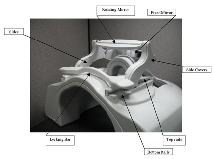
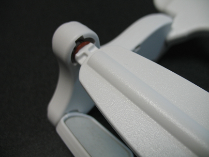
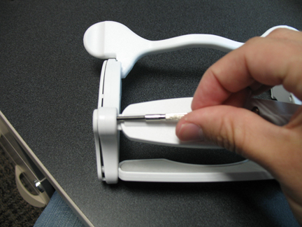
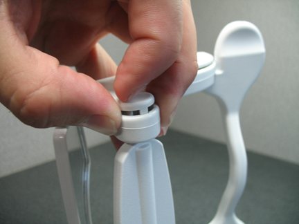

1.5T Head Neck Spine (HNS) Mirror Repair/Replacement
Prerequisites
Table 1. Personnel requirements
Required persons
Preliminary requirements
Procedure
Finalization
1
Not Applicable
40 minutes
Not Applicable
Table 2. Tools and test equipment
Item
Quantity
Effectivity
Part number
Manufacturer
⅛” and ¼” Flathead Screwdrivers
1 each
Replacement of mirror assembly
-
-
Table 3. Replacement parts
Item
Quantity
Effectivity
Part number
Manufacturer
Mirror assembly FRU
1
Replacement of mirror assembly
2419521
GEHC Coils
About this task
Follow this process to reassemble the mirror assembly.
Procedure
Notice
Please refer to the Mirror assembly FRU list above in Replacement Parts.
FRU is needed only if the mirror assembly cannot be properly reassembled.
Parts of the Mirror

Inspect mirrors to ensure that they are not coming loose from
the plastic housings. If the mirrors are coming loose a new mirror
assembly will be needed.
Inspect all parts for broken snap features. If any of the snap
features are broken, a new mirror assembly will be needed.
There are 2 located on each end of each of the cross pieces
(the locking bar, the rotating mirror, and the fixed mirror). See Cross-Piece Snap Features.
If any of the cross pieces have been dislocated from their proper
position (see Cross-Piece Dislocated), the side covers will need to
be removed to properly re-seat the snap feature. This is due to the
locking features on the inside of the side covers. The locking features
are the three round features shown in Locking Features on the Side Covers.
Figure 4. Cross-Piece Dislocated

Figure 5. Locking Features on the Side Covers
If needed, the side covers can be removed by inserting a small
screwdriver from the backside of the sides to disengage the snap feature
on the side covers. (See Removing Side Covers.) Start at the bottom and work
up to the top of the mirror.
Figure 6. Removing Side Covers

When reassembling the cross pieces with the side it is best
to engage all three cross pieces at the same time, rather than one
at a time.
The rotating mirror requires some additional pressure to properly
engage. This is because of the o-rings, which supply the correct amount
of drag to resist rotation. In the picture shown (see Engaging the Rotating Mirror), firm pressure is being applied using the thumb and middle finger
while gentle pressure is being applied with the index finger.
Figure 7. Engaging the Rotating Mirror

The reassembly of the rails below is from
the operators manual. To prevent breakage, the mirror is designed
to break away from the anterior face component. In the event that
the mirror assembly is pulled from the anterior face component, the
mirror can be reinstalled using the following procedure:
Release the lock bar on the mirror assembly, so that the two
top rail sections come loose from the mirror assembly.
Insert the small tab on the top rail in the mirror rail base
and snap the rail down so that the three snap features engage the
rail base. Repeat for the other side.
If a new mirror assembly needs to be installed the FRU kit includes
the top and bottom rails as well as the screws needed. A decision
can be made about whether the rails need to be replace, depending
on the condition of the old rails. If they are to be replaced the
top rails should be pulled off, and the four screws should be removed.
Use the new screws to attach the new lower rails torque to 3 inch-pounds.
Install top rails as described in Step 7.
Finalization
Ensure that all joints are firmly seated and that the mirror
assembly is functioning properly.